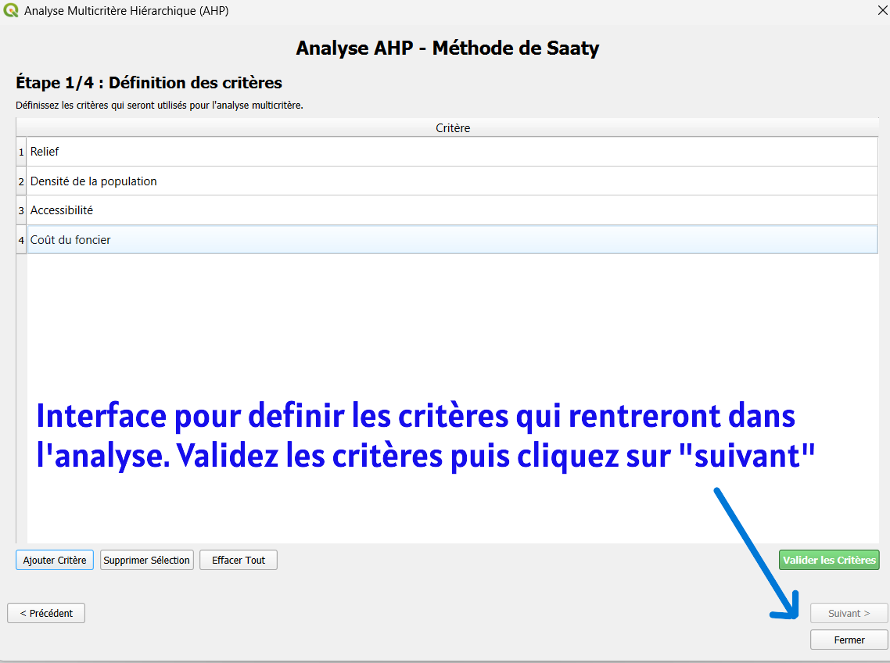
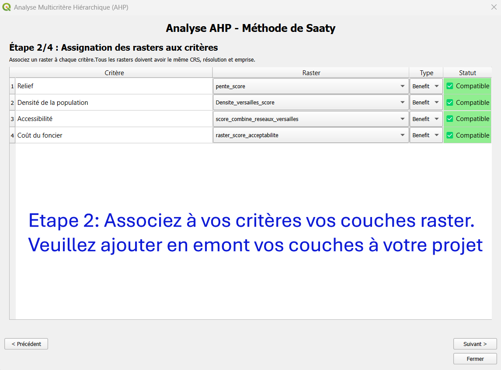
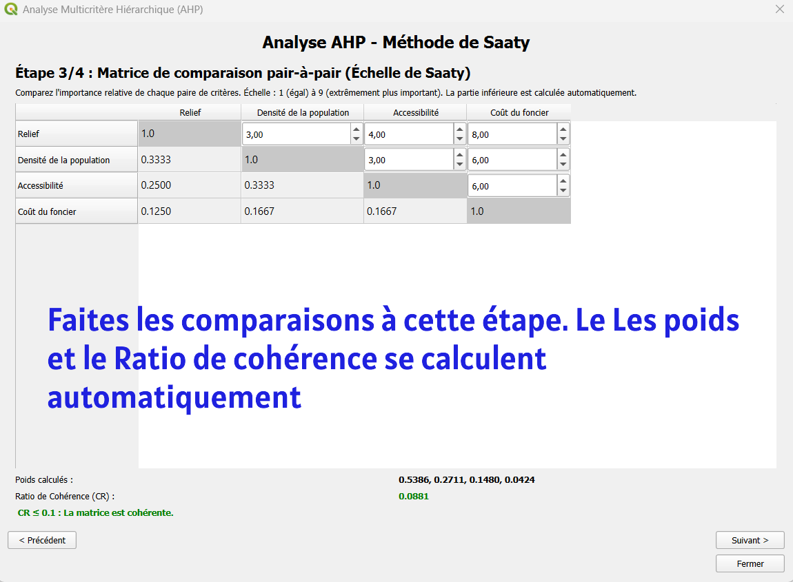
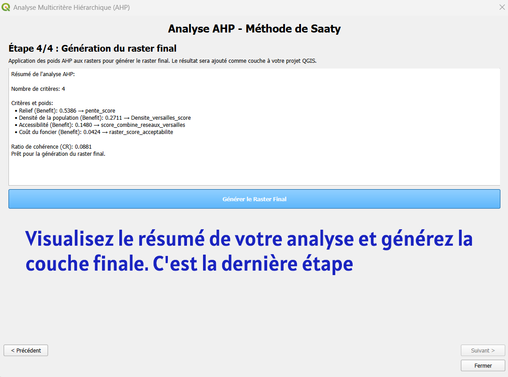

Un plugin QGIS pour l’analyse multicritère hiérarchique (AHP)
Les projets d’aménagement du territoire ou de gestion des risques s’inscrivent dans des contextes décisionnels complexes. Ces projets ne sont jamais simples. Ils nous obligent à jongler avec une multitude de facteurs, tous très différents les uns des autres. Imaginez-vous, par exemple, en train de choisir l'emplacement d'une nouvelle ligne de train. D'un côté, il y a les aspects techniques et les coûts économiques. De l'autre, il faut penser à l'impact sur l'environnement, respecter des réglementations, et surtout, ne pas oublier les habitants et les communautés concernées.
Le vrai défi ? Mettre tout ça sur la même table. Comment comparer le prix d'un tracé avec la préservation d'une zone naturelle ou avec l'avis des riverains ? Certaines données se mesurent et sont quantitatives, tandis que d'autres relèvent davantage du ressenti et de l'appréciation. Il ne s'agit pas d'une simple addition. Chaque élément a un poids différent dans la balance de la décision finale.
C’est précisément pour ça qu’ont été développées les méthodes d’aide à la décision multicritère. Parmi elles, l'Analytic Hierarchy Process (AHP), mis au point par Thomas L. Saaty occupe une place majeure. Sa robustesse conceptuelle et sa capacité à intégrer des critères qualitatifs et quantitatifs expliquent son usage dans de nombreux domaines.
Lors de la rédaction de mon mémoire de master 1, l’absence d’un outil SIG dédié à l’AHP a constitué une limite importante. Les calculs des matrices de comparaison, des poids et des indices de cohérence ont dû être réalisés manuellement, puis réintégrés dans QGIS pour produire des cartes d’aide à la décision. Cette approche, bien que méthodologiquement valide, s’est révélée chronophage et peu automatisée. Le plugin présenté dans cet article a été conçu précisément pour répondre à cette lacune.
Tout d'abord, voici quelques cartes de décision issues d'analyse multicritère AHP

1. Présentation générale du plugin AHP Analysis
Le plugin AHP Analysis est dédiée à la réalisation d’analyses multicritères spatiales basées sur le processus analytique hiérarchique. Chaque critère de décision est représenté par une couche spatiale de type raster. L’outil a été conçu pour être :
- méthodologiquement rigoureux, en respectant les principes de l’AHP ;
- accessible, via une interface graphique intuitive ;
- intégré, fonctionnant entièrement dans QGIS (Qt5, Qt6) sans dépendances externes ;
- polyvalent, applicable à des problématiques variées.
Quelques points clés à connaître
Dans l'actuelle version, l'option permettant de définir à l’étape 2 si un critère est un "coût" (Plus la valeur est élevée, pire c’est) ou un "bénéfice" (Plus la valeur est élevée, mieux c’est) a un rôle purement informatif. Elle vous aide à vérifier la logique de votre modèle, mais n'influence pas encore le calcul final. Son intégration opérationnelle est prévue pour une future mise à jour. Pour cela, tous les rasters doivent être prétraités et normalisés (classifiés) par l'utilisateur avant l'analyse, de manière à ce que des valeurs élevées représentent toujours une situation plus favorable. Donc un bénéfice.
Afin de garantir la validité des calculs, tous les rasters associes aux critères doivent impérativement utiliser le même système de coordonnées (CRS), avoir la même résolution spatiale et partager la même emprise géographique.
Historique des versions
La première version du plugin à été publiée le 1er janvier 2026 avec uniquement le français comme langue et fonctionnant qu’avec QGIS ≥ 3.0.0 sur Qt5. Une mise à jour a été effectuée le 30 janvier 2026 afin de proposer une traduction en Anglais et une compatibilité Qt5 et Qt6. Si votre QGIS est en anglais, le plugin s’affiche automatiquement en Anglais. Idem pour le français. Sinon c’est le français comme langue par défaut.
2. Comment ça marche ?
- Définition des critères : Vous commencez par lister vos critères de décision et vous associez à chacun une couche raster correspondante. Les rasters doivent être déjà dans votre projet QGIS.
- Comparaisons par paires : C'est le cœur de l'AHP. Via une interface dédiée, vous comparez l'importance relative de chaque critère par rapport à un autre, en utilisant l'échelle de Saaty.
- Calculs automatiques et contrôle de cohérence : Le plugin calcule instantanément la matrice normalisée, les poids définitifs de chaque critère et surtout, le Ratio de Cohérence (CR). Ce dernier est un indicateur précieux. Si votre CR dépasse un seuil acceptable (généralement 0.10), le plugin vous invite à revoir vos jugements, car vos réponses peuvent être incohérentes.
- Génération de la carte de décision : Une fois les poids validés, le plugin combine automatiquement toutes vos couches raster selon ces poids pour produire une carte synthétique de décision. Cette carte finale vous montre visuellement quelles zones sont les plus favorables (ou les plus à risque) selon l'ensemble de vos critères.
|  |  |
|  |  |
3. À quoi peut-il servir ?
Même si le développement initial a été motivé par une étude sur l'implantation d'antennes relais de téléphonie mobile, le champ d'application reste très large. Cet outil peut être utilisé pour :
- La planification territoriale
- Les études d'impact environnemental
- La localisation d'infrastructures ( choisir le meilleur site pour une nouvelle école, un hôpital ou un centre logistique...)
- La gestion des risques (cartographier la vulnérabilité d'un territoire aux inondations, aux glissements de terrain ou aux risques industriels...)
- etc.
Publication dans le dépôt officiel des extensions QGIS